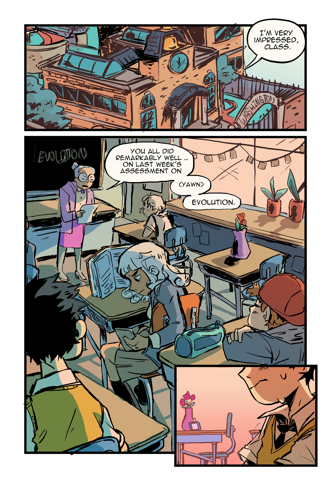

Colors and Rendering Fun
I always appreciate a dreamlike, romantic quality to a painting's color palette. I like to focus
mostly on soft by dynamic lighting and moody color harmonies. I'm most fond of palletes with
dusty blue and greens and complementing them with soft warm lights.
But you can probably tell that these preferences aren't too hard and fast.
I like
experimenting.
"abble"
Study of an apple, gone wrong. I wanted to incorporate some surrealist aspects."deer"
A deer in a forest clearing. Emphasis on shape and lighting.
"contemporary still life"
A riff on the typical still life formula, only with a more... modern meal. I used bright unnatural colors in this piece in order to convey the modern "contemporary" look."Haunting"
This painting is the first of two parts. There are footsteps on the ceiling, perhaps to signify the tenant in the apartment above making noise."Haunting"
This second part. The character wakes up suddenly. The vibe of these drawings are supposed to feel cold and empty. Were those footsteps real? Does the upstairs neighbor exist?
"There's no such thing as a coincidence"
An experiment in rendering. Had some fun with a fisheye angle
I mostly like to sketch. When it comes to full rendering, I appreciate a loose and unfiltered
approach, with visible brush strokes and purposely messy lines. It just feels more authentic :)
Goose Nap
This goose character is a regular in my friend's art. I drew this bird as a reason to practive my digital painting techniques."study. bathroom"
This is a study in backgrounds, an aspect of illustration I'm progressively working on. I'm fond of moody lighting.٩(｡•́‿•̀｡)۶

Concept Art for Narratives
Welcome to my story-board! One of my biggest passions is comics and narrative driven art, I always have a story that I want to tell. Here are some ongoing projects that I’ve been steadily drafting. I’m currently taking inspiration from gothic horror and emphasizing supernatural and science fiction elements to build emotion and intrigue. Enjoy ~♡

Paper Masks
Paper Masks is a about a pair of students who are brought together to solve the mystery of their mutual friend's disappears. The story is a satirization of the competative highschool experience full of teen drama, the horror of grades, and the fear of being unknown.


Currently developing: "The Shadow"
This story follows a young girl who finds her life being hijacked by a villainous doppelganger who's trying to replace her. I plan on leaning heavily on horror elements here, especially since the reality bending aspects of a doppelganger narrative can easily become eerie.- A lonely but independant kid who has to deal with a clingy crybaby friend
- Pyromania! A story about a gunslinger who needs to fight monsters in the post apocalyptic Wild West
- Unseen Bodies of Water: The story of a man who comes to inherit a cabin by a lake that might be haunted by a vengeful water spirit.
More rapidfire concepts:


Sketches and doodles
Not too much to say about these... Have some sketches that I like to make every so often.
Inspired By...
Art inspired by on existing intellectual properies ★
Drawing of Bruce Wayne aka Batman
A sketch inspired by a character from a Lego cartoon I used to enjoy.
A drawing referenced from a screencap from the original Five Nights at Freddy's game.